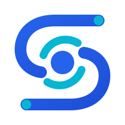

SOIAGestão científica inteligente em um só espaço.
Exemplo de transição da abertura para a landing page. Substitua este conteúdo pela página real do sistema.

SOIAExemplo de transição da abertura para a landing page. Substitua este conteúdo pela página real do sistema.